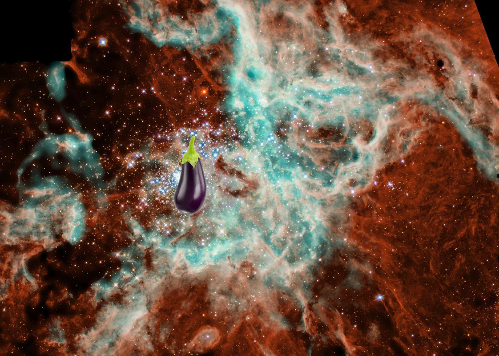

-
 Something Strange @ Moons that Share!
Something Strange @ Moons that Share! -
Something Strange – Galaxies of all Shapes Host Black Holes Artist Concept
-
A Mystery @ Jupiter Gossamer Ring Structure!
-
An Unexpected Discovery ; Petite Moon.
-
Something Strange | Bothersome Moon!
-
??? @ Dione Bright Streaks!
-
A Mystery @ Neptune Hot South Pole
-
Something Strange, An Unexpected Discovery – X-Rays from Pluto
-
A Mystery – Mini Moon.
-
A Mystery | Mars at Ls 211°: Tharsis!
-
Something Strange on Jupiter Jet Stream!
-
An Unexpected Discovery, An Unexpected Discovery | Inner Radiation Belts of Jupiter
-
A Mystery on Doradus Nebula.
-
Something Strange, A Mystery | Band of Bright Rock False Color!
-
A Mystery – History of Hubble Space Telescope (HST).
-
A Mystery ; Lonely Galaxy Lost in Space!
-
A Mystery | Comet Surface Variations
-
 A Mystery | Pluto Close-up, Now in Color
A Mystery | Pluto Close-up, Now in Color -
Something Strange @ Changing Lightning Storms on Jupiter.
-
 A Mystery, Something Strange, ??? + Venus - Phoebe Region
A Mystery, Something Strange, ??? + Venus - Phoebe Region